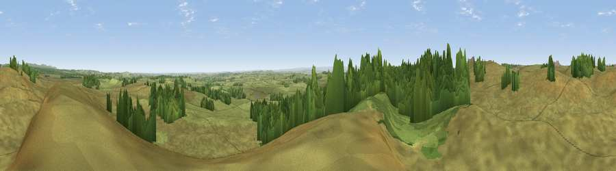

Viewpoint near Kirkwhelpington
#11767 in England · top 27% of its area beats it · near KirkwhelpingtonWhere it is
The exact computed spot (NY 96925 86475). Click the marker for map links.
The view, rendered

A 360° render of this exact spot computed from the terrain model, tree cover and land cover — summer colours, afternoon light, calibrated against photographs of famous viewpoints. Real trees, hedges and buildings will differ in detail.
The panorama
Grey silhouette: terrain skyline in each direction (720 bearings, Earth curvature and refraction included). Dashed green: skyline with trees (+15 m) and buildings (+8 m) as obstacles. Blue strip: how far the ground is visible on each bearing.
Where the view opens
Wedge length = distance to the farthest visible ground on that bearing (vegetation-aware). Rings at 10, 25 and 50 km.
What fills the view
78% grassland · 21% woodland ·
Angular shares of the visible panorama (visual magnitude), not map area. Landscape diversity 0.25 (0–1 Shannon).
Key numbers
More beautiful places nearby
The staircase of upgrades: each row has a higher view potential than everything closer. Driving times are estimates from straight-line distance, calibrated against real road routing — check an actual route before setting out.
| Place | Direction | Drive | Score |
|---|---|---|---|
| Viewpoint near Kirkwhelpington | W · 1 km | ~3 min | 62.2 |
| Viewpoint near Elsdon | NW · 4 km | ~9 min | 62.9 |
| Viewpoint near West Woodburn | WNW · 4 km | ~10 min | 63.8 |
| Hart Side | WNW · 5 km | ~11 min | 71.0 |
| Viewpoint near West Woodburn | WSW · 5 km | ~11 min | 73.4 |
| Darden Rigg | N · 10 km | ~20 min | 77.0 |
| Viewpoint near Thropton | NNE · 13 km | ~24 min | 81.8 |
| Viewpoint near Hepple | NNE · 13 km | ~24 min | 82.4 |
55.17257, -2.04982 · source: screening · position refined by local search. Computed location — check access rights before visiting.